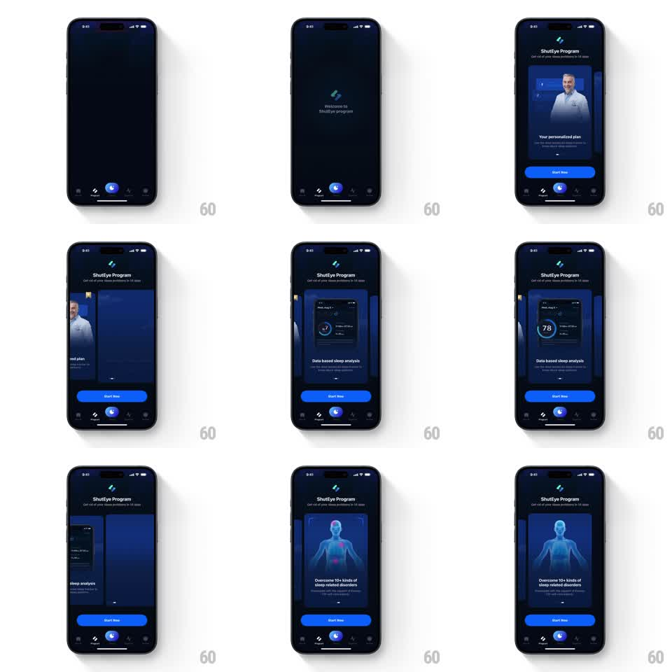

Media
Frame-by-frame

Rebuild this animation 1:1: ShutEye's program value-prop carousel - a "Welcome to ShutEye program" logo beat, then auto-advancing value cards ("Your personalized plan", "Data based sleep analysis", "Overcome 10+ kinds of sleep-related disorders") whose inner content animates on each arrival.

Rebuild this animation 1:1: ShutEye's program value-prop carousel - a "Welcome to ShutEye program" logo beat, then auto-advancing value cards ("Your personalized plan", "Data based sleep analysis", "Overcome 10+ kinds of sleep-related disorders") whose inner content animates on each arrival.
## Integration
Integration: stack-agnostic spec - springs given as stiffness/damping, timed motions as duration + curve; map every value to your framework and animation library of choice.
## Scene
A dark "ShutEye Program" page ("Get rid of your sleep problems in 14 days") with a large value card in the center, page progress beneath, and a "Start Now" button over the tab bar. Cards: a coach photo card ("Your personalized plan"), a sleep-score dashboard card ("Data based sleep analysis", ring showing 78), and a hologram body card ("Overcome 10+ kinds of sleep-related disorders").
## Motion spec
Pattern: auto-playing card carousel with internal micro-animations, ~3s per card.
- The ShutEye logo mark appears alone ("Welcome to ShutEye program"), then the page slides in (400ms ease-out).
- The first card centers itself (spring stiffness 300 damping 22), its photo and title staggering in (150ms apart); neighboring cards peek at the edges.
- Every 3s the carousel advances: the current card slides out and shrinks, the next slides in from the right and grows (400ms, ease-in-out), and its inner content replays its entrance (photo fade, score ring sweeping to 78, hologram glow-up).
- The page progress dots advance with each card.
## Calibration
- The auto-advance is smooth and regular; a manual swipe preempts the timer and follows the finger.
- Inner animations belong to the incoming card only - settled cards stay still.
## Reduced motion
Cards crossfade; inner content static.
## Don't miss
- The "Start Now" button and tab bar stay fixed - only the card area moves.
- Edge cards are dimmed and scaled to 90%, framing the active card.